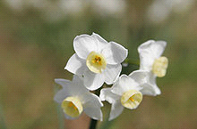
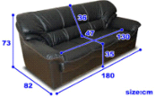
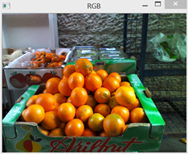
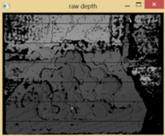
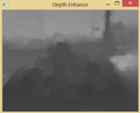
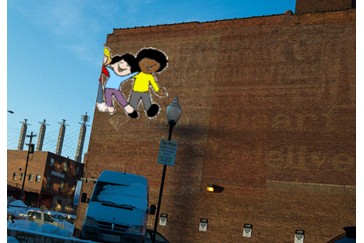
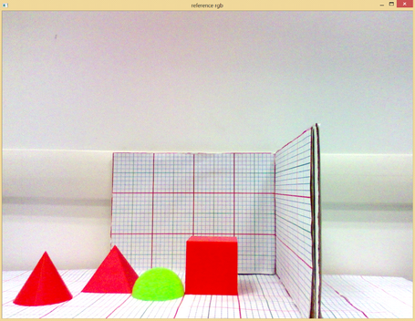
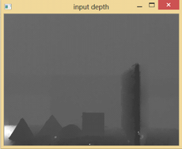
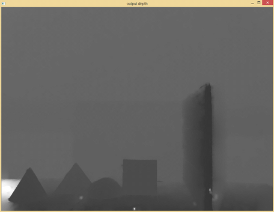

|
The SDK Enhanced Photography (EP) module enhances traditional photo and video processing by leveraging 3D depth information recorded with photos or videos.
The following features are supported in the preview, with more coming to cover the entire pipeline of photography processing:
| • | Depth-of-Field: The feature changes the focus point and the given depth of field of a picture after capturing. Figure 57 shows an example. The focus is adjusted on the flower. By changing the focus, you can emphasize certain portion of the picture at the photo post-processing stage. |

Figure 57: Change Focus of a Picture in Post-Processing.
| • | Measurement: The feature measures the Euclidean measurement of elements in a captured image, using the depth information captured with the image. Figure 58 shows an example of the measurements. Accurate measurement is only possible when depth information is recorded with the image. |

Figure 58: Measure Euclidean Distance.
| • | Depth Enhancement: The raw depth map coming out of the camera tends to be noisy, and lacks depth data in many pixels. The depth enhancement feature uses a set of algorithms to improve the depth map by removing noise and completing depth data. Figure 59 shows the RGB image, the raw depth, and the enhanced depth images from left to right. |

Figure 59: RGB Image, Raw Depth (Left) and Enhanced Depth (Right)
| • | Two Layer Segmentation: The layer separation provides a foreground and background mask based on user input. The mask can be used to create artistic effects on the image, as illustrated in Figure 60. |
Figure 60: Two Layer Segmentation
| • | Depth Blend: The depth blend editing effects enable manipulating captured images by adding 2D images to the scene. Placed objects are sized to be proportional to the scene. Occlusions are taken into account. |
Figure 61: Depth Blended Picture
| • | Paste on Plane: The paste on plane effect supports sticker insertion on a flat (or nearly flat) surface while taking into account the surface’s orientation. |

Figure 62: Paste a Sticker On the Wall.
| • | Depth Resize: Change the depth resolution to match the color image size. |

Figure 63: DepthResize Original Color Image

Figure 64: DepthResize Raw (Left) and Resized (Right) Depth Images
|